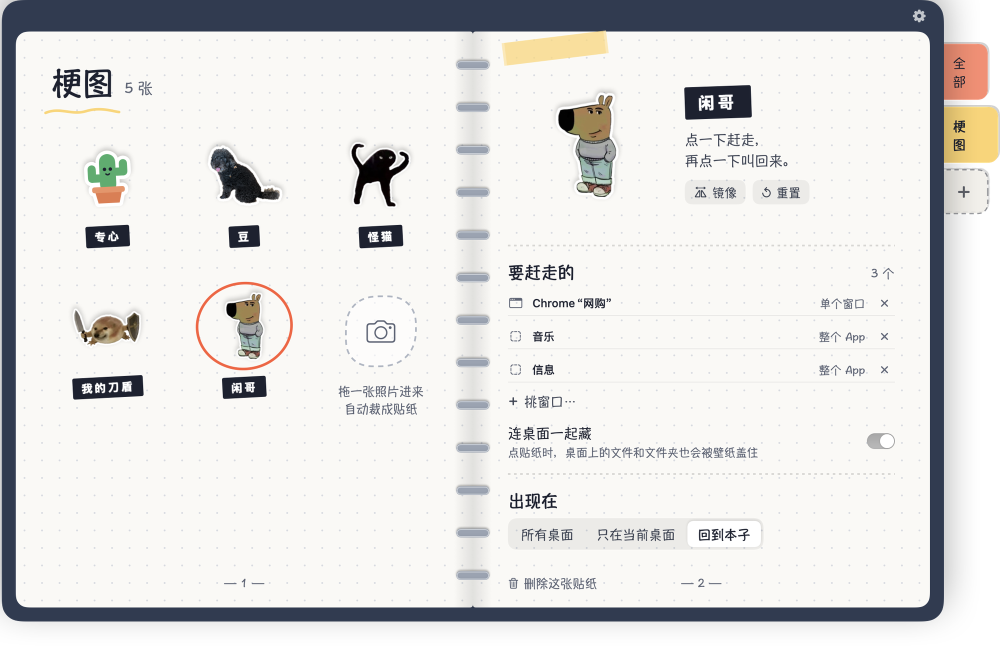

贴在 Mac 桌面上的贴纸本子
点一下贴纸，窗口统统藏起来。
把 Shoo 贴在桌面上，告诉它要管哪些 App 或窗口。点一下全部藏起来，再点一下，全部回到原来的位置。


点一下，桌面就干净了。
试试看：选一个场景，再点一下小恶魔。
点我！
做成你自己的
任何照片都能做成贴纸——你的狗、你的朋友、你最爱的梗图——再让每一张负责不同的事。

- 把照片拖进来，Shoo 在你的 Mac 上直接抠图
- 用自己的分类标签和颜色整理贴纸
- 每张贴纸藏自己那一组窗口
怎么用
三个步骤，没有设置界面。
1
撕一张贴纸
从本子把贴纸拖出来，贴在桌面任何地方。
2
指给它看
选“挑窗口…”，点一下这张贴纸要管的窗口或 App。
3
点一下，Shoo！
点贴纸全部藏起来，再点一下叫回来。
用起来顺手的小细节
所有事都在你的 Mac 上、在本子里完成。
- 单个窗口或整个 AppSafari、Chrome、备忘录、访达可以只藏一个窗口，其他 App 整个藏。
- 连桌面一起藏贴纸生效时，用你自己的壁纸盖住桌面上的文件。
- 所有桌面或只在当前桌面贴纸可以出现在每个桌面，也可以只留在一个。
- 在本子里直接改改名、调大小、旋转、镜像，都在看得到的地方。
- 不占地方Shoo 可以显示在程序坞、菜单栏，或都不显示。
- 六种语言English、繁體中文、简体中文、日本語、한국어、ไทย。
免费开始
小恶魔免费送你，所有功能都能用。其他的一次买断，无需订阅。
 免费
免费
红色小恶魔
- 一张贴纸就有全部功能
- 藏窗口、藏 App、连桌面一起藏
- 所有语言
 解锁完整版
解锁完整版
一次买断
- 另外 5 款手绘贴纸
- 用自己的照片做贴纸
- 自定义分类标签和颜色
- 想做几张就做几张

常见问题
为什么 macOS 会问要不要让 Shoo 控制 Safari、Chrome、备忘录或访达？
这是 Shoo 只藏那个 App 某一个窗口的方法。Shoo 只会让那个 App 把你指定的窗口藏起来或叫回来。如果你选不允许，Shoo 会改为整个 App 一起藏。
任何 App 都能藏吗？
可以。任何 App 都能整个藏起来；只藏单个窗口目前支持 Safari、Chrome、备忘录、访达。
需要订阅吗？
不需要。Shoo 免费，附小恶魔贴纸；解锁全部是一次买断。